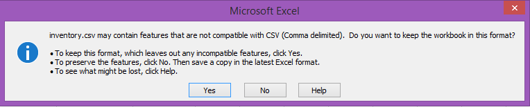

CSV inventory
This plugin reads and writes a local inventory system.
It can be used with the shipping plugins (ie. DHL or Australia Post) and the order plugins (ie. ebay or wooCommerce) to manage stock levels. There are 2 files involved
- inventory.csv this file holds the stocks levels by location by sku. A sku can be contained in one or more locations. As shipments are confirmed the stock levels will be
adjusted.
- audit.csv this file holds the date, order#, sku, location and the quantity removed.
The processing is by the sku number. So for example, when an ebay order is shipped via DHL the ebay sku will be used as a lookup into inventory.csv.
- When there are multiple locations for a sku, those listed first will have their quantities adjusted.
- You may open the files in Excel to manage the entries. Do NOT have the files open in Excel when processing shipments. Excel locks the files so that they cannot be adjusted
- The files are stored in the data\csvInventory directory. So if you installed IoTkeys into c:\apps\IoTkeys then the file will be saved in c:\apps\IoTkeys\data\csvInventory
- If the files don't exist they will be automatically created
When you edit the files it is really important that you preserve the csv format. Within Excel when you save you will see the following message.

Select yes otherwise the application may not be able to properly read the file.